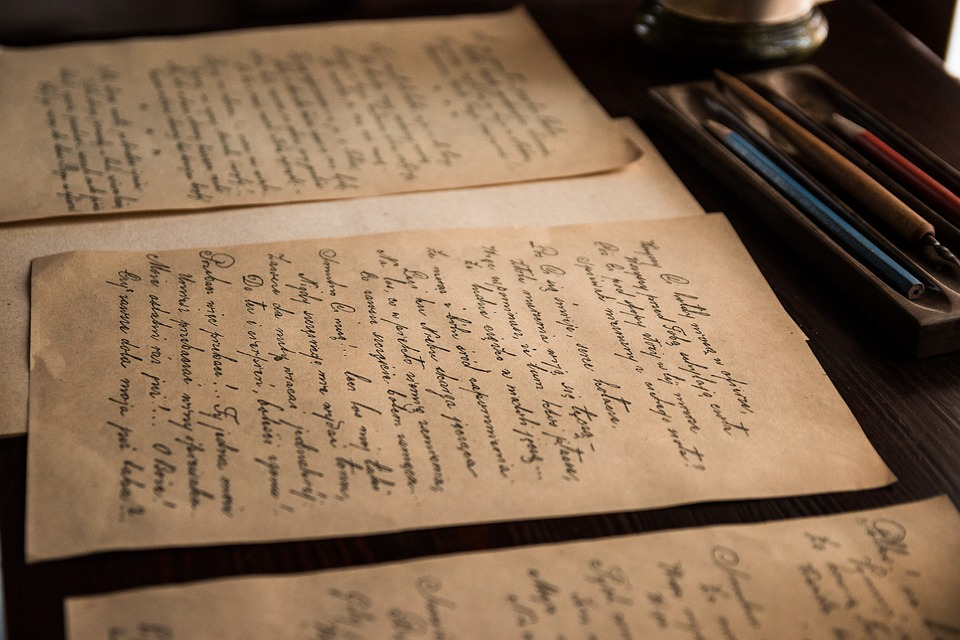

НАЙДЕНА СТАРЕЙШАЯ В ЕВРОПЕ КАПСУЛА ВРЕМЕНИ
В процессе ремонта старинной церкви в польском городе Зембице были обнаружены строительные документы и монеты, спрятанные в шпиле.
Документ написан в 1797 году на немецком языке. В нем перечислены имена людей, участвовавших в возведении церкви и жертвовавших деньги на строительство. Также была обнаружена личная записка от двух женщин, которые пожертвовали деньги на строительство церкви. В XVIII веке город Зембице носил название Мюнстерберг и входил в состав Пруссии.
Судя по наличию в тайнике монет 1855 года, в XIX веке капсулу кто-то нашел, почистил и добавил к ней новые артефакты. Рядом с капсулой были найдены документы и фотографии, датированные 1902–1903 годами. Они включают в себя газету Münsterberger Zeitung от 20 августа 1902 года и молитвенники. После реставрационных работ находки будут выставлены на всеобщее обозрение.
Самой старой капсулой времени считается тайник, обнаруженное в одном из домов Бостона. Коробка с документами, газетами и монетами была замурована в стену в 1795 году. Это делает польскую капсулу старейшей в Европе и второй по старшинству в мире.